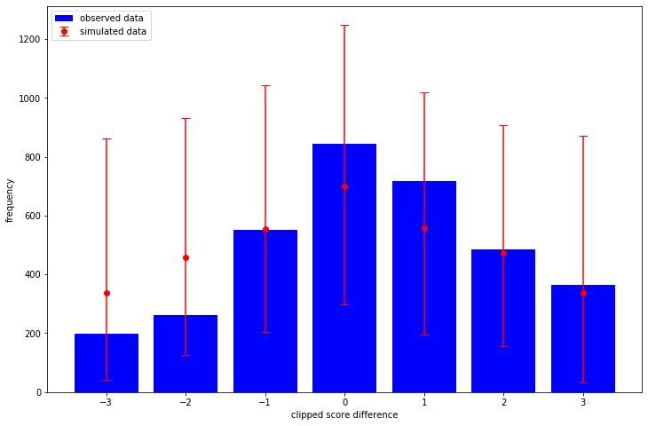
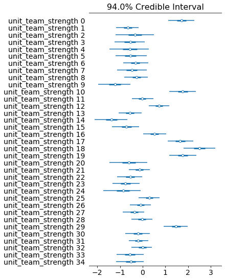
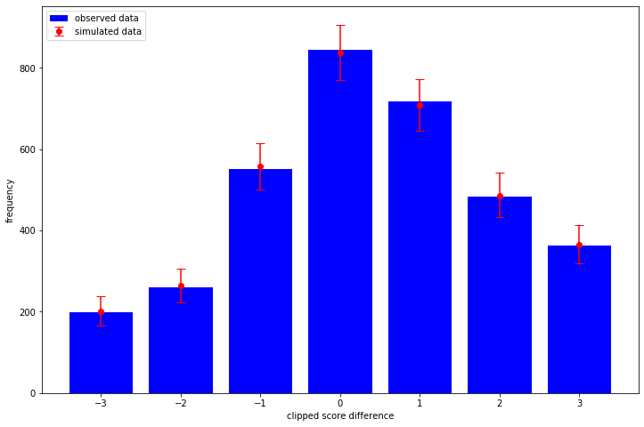

I was very pleased to wake up the other day to find that some code I wrote for the ordered logistic distribution had been accepted into TensorFlow Probability (TFP)! However when writing this post I found that my code wasn't quite right (so my testing was bad) and I've tried to rectify that in this PR which includes the code I am using in this post.
The ordered logistic distribution is one of those annoying ones which people tend to call lots of different things and also write down differently too. The implementation I used in TFP follows Stan and PyMC3 and is currently documented here.
I've decided to show an example of all this with some soccer data, in fact the same data I used in a previous post when I diagnosed a problem with the model underestimating the draw probability. I wonder if it will be the case again when we directly consider modelling the (clipped) score difference as an ordered outcome?
I'll also implement the model in TFP and Stan and see how they compare.
For a detailed explanation on the prior used on the cutpoints and general ordinal model goodness, see This case study by Michael Betancourt.
Until the next TFP release (0.10.0 I think) the ordered logistic distribution will be available in the nightly TFP release, which is tested against the TensorFlow nightly release:
import tensorflow as tf import tensorflow_probability as tfp print(f"tf: {tf.__version__}") print(f"tfp: {tfp.__version__}")
tf: 2.2.0-dev20200212 tfp: 0.10.0-dev20200214
import pandas as pd import numpy as np data_list = [] for x in range(10, 19): season = f"{x}{x+1}" url = f"http://www.football-data.co.uk/mmz4281/{season}/E0.csv" data_list.append(pd.read_csv(url)) soccer_data = ( pd.concat(data_list, axis=0) .rename( columns={ "HomeTeam": "home_team_name", "AwayTeam": "away_team_name", "FTHG": "home_goals", "FTAG": "away_goals", } ) .filter(regex="^home_|^away") .dropna() .astype({"home_goals": np.int32, "away_goals": np.int32}) .assign( clipped_score_difference=lambda x: np.clip( x["home_goals"] - x["away_goals"], -3, 3 ) ) ) team_names = np.unique( pd.concat([soccer_data["home_team_name"], soccer_data["away_team_name"]]) ) def team_code(team_name): def fn(df): codes = pd.Categorical(df[team_name], categories=team_names).codes return codes.astype(np.int32) return fn soccer_data = soccer_data.assign( home_team=team_code("home_team_name"), away_team=team_code("away_team_name"), ) print(soccer_data.head())
home_team_name away_team_name home_goals away_goals \ 0 Aston Villa West Ham 3 0 1 Blackburn Everton 1 0 2 Bolton Fulham 0 0 3 Chelsea West Brom 6 0 4 Sunderland Birmingham 2 2 clipped_score_difference home_team away_team 0 3 1 32 1 1 3 12 2 0 5 13 3 3 10 31 4 0 27 2
num_outcomes = 7 num_teams = len(team_names) home_team = soccer_data["home_team"].to_numpy() away_team = soccer_data["away_team"].to_numpy() clipped_score_difference = soccer_data["clipped_score_difference"].to_numpy() tfb = tfp.bijectors tfd = tfp.distributions Root = tfd.JointDistributionCoroutine.Root def logit(x): return -tf.math.log(tf.math.reciprocal(x) - 1.0) def make_cutpoints(simplex): return logit(tf.math.cumsum(simplex[..., tf.newaxis, :-1], axis=-1)) def model(): cutpoints_simplex = yield Root(tfd.Dirichlet([1., 2., 3., 4., 3., 2., 1.])) team_scale = yield Root(tfd.HalfNormal(1.0)) team_strength = yield tfd.MultivariateNormalDiag( loc=tf.zeros(num_teams), scale_diag=team_scale[..., tf.newaxis] * tf.ones(num_teams), ) home_strength = tf.gather(team_strength, home_team, axis=-1) away_strength = tf.gather(team_strength, away_team, axis=-1) clipped_score_difference = yield tfd.Independent( tfd.OrderedLogistic( cutpoints=make_cutpoints(cutpoints_simplex), loc=home_strength - away_strength, ), reinterpreted_batch_ndims=1, ) joint_dist = tfd.JointDistributionCoroutine(model)
What I like about TFP over stan is that it is automatic to sample from the prior (i.e. before we condition on any observed outcomes) and in this case it is obvious what the effect of our priors are. That is, how informative and realistic they are. Here I sample 1,000 datasets and consider the resulting clipped score differences:
import matplotlib.pyplot as plt _, _, _, prior_predictive_samples = joint_dist.sample(1_000) sampled_score_difference_counts = [ np.bincount(sample, minlength=7) for sample in prior_predictive_samples ] obsered_score_difference_counts = np.bincount(clipped_score_difference + 3) sampled_mean = np.mean(sampled_score_difference_counts, axis=0) sampled_quantiles = np.quantile( sampled_score_difference_counts, q=[0.025, 0.975], axis=0 ) low_error = sampled_mean - sampled_quantiles[0] high_error = sampled_quantiles[1] - sampled_mean plt.bar( x=np.arange(-3, 4), height=obsered_score_difference_counts, label="observed data", color="blue", ) plt.errorbar( x=np.arange(-3, 4), y=sampled_mean, yerr=[low_error, high_error], fmt="o", label="simulated data", color="red", capsize=5, ) plt.legend(loc="upper left")

The way we have written the model is quite interpretable - so we could spend some time thinking about what priors we should choose. That's not what I'm exploring in this post however - I want to see how my posterior looks!
I'm not quite sure how to decide how many chains/samples to take with TFP on the GPU right now, adding extra chains is usually cheap though so I'm running twice as many chains (and half the number of results) compared to the stan code below.
import time as tm num_chains = 10 num_burnin_steps = 1_000 num_results = 500 def target_log_prob_fn(*state): return joint_dist.log_prob(list(state) + [clipped_score_difference + 3]) def trace_fn(states, pkr): return ( pkr.inner_results.inner_results.target_log_prob, pkr.inner_results.inner_results.leapfrogs_taken, pkr.inner_results.inner_results.has_divergence, pkr.inner_results.inner_results.energy, pkr.inner_results.inner_results.log_accept_ratio, ) def step_size_setter_fn(pkr, new_step_size): return pkr._replace( inner_results=pkr.inner_results._replace(step_size=new_step_size) ) def step_size_getter_fn(pkr): return pkr.inner_results.step_size def log_accept_prob_getter_fn(pkr): return pkr.inner_results.log_accept_ratio initial_state = list(joint_dist.sample(num_chains)[:-1]) initial_step_size = [0.1] * len(initial_state) nuts = tfp.mcmc.NoUTurnSampler(target_log_prob_fn, step_size=initial_step_size) transformed_nuts = tfp.mcmc.TransformedTransitionKernel( inner_kernel=nuts, bijector=[tfb.SoftmaxCentered(), tfb.Softplus(), tfb.Identity()], ) adaptive_transformed_nuts = tfp.mcmc.DualAveragingStepSizeAdaptation( inner_kernel=transformed_nuts, num_adaptation_steps=int(0.8 * num_burnin_steps), target_accept_prob=0.85, step_size_setter_fn=step_size_setter_fn, step_size_getter_fn=step_size_getter_fn, log_accept_prob_getter_fn=log_accept_prob_getter_fn, ) @tf.function(autograph=False, experimental_compile=False) def run_mcmc(): return tfp.mcmc.sample_chain( num_results=num_results, current_state=initial_state, num_burnin_steps=num_burnin_steps, kernel=adaptive_transformed_nuts, trace_fn=trace_fn, )
start_tfp = tm.time() samples, sample_stats = run_mcmc() end_tfp = tm.time() print(f"TFP took {end_tfp - start_tfp:.2f} seconds")
TFP took 332.30 seconds
Was unfortunate that I couldn't get experimental_compile=True to work, which in some
examples gives a massive speed boost. It gives an error about the Gamma sampler not
being supported, which is called in the Dirichlet sampler.
As per usual I use arviz to explore the results:
import arviz as az import numpy as np sample_names = ["cutpoints_simplex", "team_scale", "team_strength"] summary_vars = ["mean", "sd", "hpd_3%", "hpd_97%", "ess_bulk", "r_hat"] az_samples = { name: np.swapaxes(sample, 0, 1) for name, sample in zip(sample_names, samples) } sample_stats_names = [ "lp", "tree_size", "diverging", "energy", "mean_tree_accept", ] az_sample_stats = { name: np.swapaxes(stat, 0, 1) for name, stat in zip(sample_stats_names, sample_stats) } tfp_fit = az.from_dict( az_samples, sample_stats=az_sample_stats, coords={"teams": team_names}, dims={"team_strength": ["teams"]}, ) print(az.summary(tfp_fit).filter(items=summary_vars))
mean sd hpd_3% hpd_97% ess_bulk r_hat
cutpoints_simplex[0] 0.042 0.003 0.037 0.048 5925.0 1.00
cutpoints_simplex[1] 0.064 0.004 0.057 0.072 5293.0 1.00
cutpoints_simplex[2] 0.162 0.006 0.150 0.174 5619.0 1.00
cutpoints_simplex[3] 0.283 0.008 0.268 0.300 5471.0 1.00
cutpoints_simplex[4] 0.233 0.008 0.218 0.247 5699.0 1.00
cutpoints_simplex[5] 0.134 0.006 0.124 0.145 5214.0 1.00
cutpoints_simplex[6] 0.081 0.004 0.073 0.090 11323.0 1.00
team_scale 0.614 0.081 0.476 0.771 6287.0 1.00
team_strength[0] 1.049 0.142 0.796 1.331 1458.0 1.00
team_strength[1] -0.401 0.149 -0.681 -0.120 1719.0 1.00
team_strength[2] -0.210 0.265 -0.692 0.297 2393.0 1.00
team_strength[3] -0.337 0.215 -0.734 0.065 2723.0 1.00
team_strength[4] -0.350 0.275 -0.901 0.148 2380.0 1.00
team_strength[5] -0.329 0.217 -0.737 0.072 2710.0 1.00
team_strength[6] -0.193 0.171 -0.491 0.149 2278.0 1.01
team_strength[7] -0.292 0.211 -0.689 0.102 2686.0 1.00
team_strength[8] -0.164 0.166 -0.479 0.147 2061.0 1.00
team_strength[9] -0.756 0.222 -1.166 -0.333 2739.0 1.00
team_strength[10] 1.083 0.139 0.823 1.339 1550.0 1.00
team_strength[11] -0.010 0.151 -0.296 0.270 1773.0 1.00
team_strength[12] 0.445 0.137 0.194 0.700 1484.0 1.00
team_strength[13] -0.341 0.162 -0.632 -0.028 2087.0 1.00
team_strength[14] -0.840 0.222 -1.250 -0.415 2916.0 1.00
team_strength[15] -0.439 0.188 -0.790 -0.088 2429.0 1.00
team_strength[16] 0.318 0.158 0.031 0.624 2019.0 1.00
team_strength[17] 1.012 0.140 0.736 1.265 1583.0 1.00
team_strength[18] 1.532 0.139 1.277 1.796 1482.0 1.00
team_strength[19] 1.080 0.139 0.824 1.353 1500.0 1.00
team_strength[20] -0.376 0.265 -0.899 0.096 2351.0 1.00
team_strength[21] -0.084 0.142 -0.350 0.178 1593.0 1.00
team_strength[22] -0.333 0.170 -0.658 -0.019 2085.0 1.00
team_strength[23] -0.459 0.181 -0.792 -0.115 2304.0 1.00
team_strength[24] -0.522 0.268 -1.030 -0.015 2620.0 1.00
team_strength[25] 0.185 0.146 -0.087 0.467 1621.0 1.00
team_strength[26] -0.058 0.141 -0.330 0.195 1528.0 1.00
team_strength[27] -0.219 0.147 -0.492 0.054 1644.0 1.00
team_strength[28] -0.014 0.148 -0.289 0.269 1651.0 1.00
team_strength[29] 0.901 0.137 0.648 1.172 1446.0 1.00
team_strength[30] -0.123 0.169 -0.459 0.173 2384.0 1.00
team_strength[31] -0.112 0.142 -0.382 0.156 1488.0 1.00
team_strength[32] -0.005 0.143 -0.280 0.259 1529.0 1.00
team_strength[33] -0.339 0.188 -0.667 0.029 2465.0 1.00
team_strength[34] -0.323 0.189 -0.690 0.016 2448.0 1.00
az.plot_forest(tfp_fit, var_names="team_strength", combined=True)
Note that there is a bug in the current version of pystan with the ordered logistic distribution so we need to edit some C++ code as per this PR.
data { int<lower = 1> n; int<lower = 2> num_teams; int<lower = 2> num_outcomes; int<lower = 1, upper = num_teams> home_team[n]; int<lower = 1, upper = num_teams> away_team[n]; int<lower = 1, upper = num_outcomes> clipped_score_difference[n]; } parameters { simplex[num_outcomes] cutpoints_simplex; vector[num_teams] team_strength; real<lower = 0.0> team_scale; } model { vector[num_outcomes - 1] cutpoints = logit( cumulative_sum(cutpoints_simplex[1:(num_outcomes - 1)])); vector[n] location = team_strength[home_team] - team_strength[away_team]; team_strength ~ normal(0.0, team_scale); team_scale ~ exponential(1.0); clipped_score_difference ~ ordered_logistic(location, cutpoints); }
import pystan import arviz as az go_faster_flags = ["-O3", "-march=native", "-ffast-math"] stan_model = pystan.StanModel( file=stan_file, model_name="ordered_model", extra_compile_args=go_faster_flags ) stan_data = { "n": len(soccer_data), "num_teams": len(team_names), "num_outcomes": 7, "home_team": soccer_data["home_team"] + 1, "away_team": soccer_data["away_team"] + 1, "clipped_score_difference": soccer_data["clipped_score_difference"] + 4, } start_stan = tm.time() stan_fit = az.from_pystan( stan_model.sampling(data=stan_data, chains=5), coords={"team": team_names}, dims={"team_strength": ["team_names"]}, ) end_stan = tm.time() print(f"stan took {end_stan - start_stan:.2f} seconds")
INFO:pystan:COMPILING THE C++ CODE FOR MODEL ordered_model_6d61697e7cef8cc6459dc8f4854acf17 NOW. stan took 20.21 seconds
print(az.summary(stan_fit).filter(items=summary_vars))
mean sd hpd_3% hpd_97% ess_bulk r_hat
cutpoints_simplex[0] 0.042 0.003 0.036 0.048 5557.0 1.00
cutpoints_simplex[1] 0.064 0.004 0.056 0.071 5888.0 1.00
cutpoints_simplex[2] 0.162 0.006 0.150 0.174 5872.0 1.00
cutpoints_simplex[3] 0.283 0.009 0.267 0.299 5085.0 1.00
cutpoints_simplex[4] 0.233 0.008 0.218 0.248 5361.0 1.00
cutpoints_simplex[5] 0.134 0.006 0.123 0.145 5422.0 1.00
cutpoints_simplex[6] 0.081 0.004 0.073 0.090 5853.0 1.00
team_strength[0] 1.051 0.144 0.775 1.310 623.0 1.01
team_strength[1] -0.397 0.154 -0.682 -0.111 702.0 1.01
team_strength[2] -0.208 0.266 -0.709 0.290 1989.0 1.00
team_strength[3] -0.337 0.215 -0.751 0.056 1416.0 1.00
team_strength[4] -0.349 0.280 -0.851 0.180 2480.0 1.00
team_strength[5] -0.325 0.222 -0.734 0.087 1556.0 1.00
team_strength[6] -0.193 0.176 -0.523 0.128 969.0 1.00
team_strength[7] -0.288 0.207 -0.673 0.104 1219.0 1.00
team_strength[8] -0.163 0.174 -0.494 0.159 936.0 1.01
team_strength[9] -0.752 0.215 -1.159 -0.342 1502.0 1.00
team_strength[10] 1.085 0.144 0.833 1.367 639.0 1.01
team_strength[11] -0.008 0.156 -0.304 0.270 751.0 1.01
team_strength[12] 0.446 0.141 0.185 0.705 639.0 1.01
team_strength[13] -0.338 0.165 -0.646 -0.036 922.0 1.01
team_strength[14] -0.836 0.217 -1.226 -0.417 1568.0 1.00
team_strength[15] -0.435 0.188 -0.781 -0.072 1142.0 1.00
team_strength[16] 0.321 0.161 0.010 0.606 794.0 1.00
team_strength[17] 1.014 0.145 0.746 1.281 643.0 1.01
team_strength[18] 1.534 0.147 1.249 1.799 663.0 1.01
team_strength[19] 1.083 0.142 0.798 1.331 640.0 1.01
team_strength[20] -0.370 0.267 -0.900 0.113 2157.0 1.00
team_strength[21] -0.083 0.148 -0.366 0.187 690.0 1.01
team_strength[22] -0.329 0.173 -0.633 0.017 980.0 1.00
team_strength[23] -0.453 0.188 -0.819 -0.111 1026.0 1.00
team_strength[24] -0.516 0.267 -0.991 0.001 2467.0 1.00
team_strength[25] 0.183 0.151 -0.096 0.470 691.0 1.01
team_strength[26] -0.054 0.145 -0.324 0.218 645.0 1.01
team_strength[27] -0.219 0.152 -0.505 0.064 704.0 1.01
team_strength[28] -0.010 0.152 -0.299 0.283 762.0 1.01
team_strength[29] 0.902 0.143 0.628 1.168 629.0 1.01
team_strength[30] -0.121 0.174 -0.441 0.217 972.0 1.00
team_strength[31] -0.109 0.142 -0.373 0.164 621.0 1.01
team_strength[32] -0.002 0.148 -0.297 0.261 663.0 1.01
team_strength[33] -0.342 0.189 -0.707 -0.001 1136.0 1.00
team_strength[34] -0.324 0.191 -0.677 0.032 1085.0 1.00
team_scale 0.613 0.085 0.466 0.774 4104.0 1.00
az.plot_forest(stan_fit, var_names="team_strength", combined=True)

Not sure how to implemenent this without copy-pasting some of the model code, would be awesome if there is a more automatic way, like when we take prior samples. Much of this code is the same as for the prior check, execpt I had to pin the sampling operation to the CPU as my (cheap) GPU would run out of memory otherwise.
cutpoints_simplex, team_scale, team_strength = samples home_strength = tf.gather(team_strength, home_team, axis=-1) away_strength = tf.gather(team_strength, away_team, axis=-1) posterior_predictive_dist = tfd.OrderedLogistic( cutpoints=make_cutpoints(cutpoints_simplex), loc=home_strength - away_strength, ) with tf.device("/CPU:0"): posterior_predictive_samples = posterior_predictive_dist.sample() sampled_score_difference_counts = [ np.bincount(sample, minlength=7) for sample in tf.reshape(posterior_predictive_samples, [-1, len(soccer_data)]) ] sampled_mean = np.mean(sampled_score_difference_counts, axis=0) sampled_quantiles = np.quantile( sampled_score_difference_counts, q=[0.025, 0.975], axis=0 ) low_error = sampled_mean - sampled_quantiles[0] high_error = sampled_quantiles[1] - sampled_mean plt.bar( x=np.arange(-3, 4), height=obsered_score_difference_counts, label="observed data", color="blue", ) plt.errorbar( x=np.arange(-3, 4), y=sampled_mean, yerr=[low_error, high_error], fmt="o", label="simulated data", color="red", capsize=5, ) plt.legend(loc="upper left")

So no obvious problems with the model in this test!
I've skipped over a bunch of details in the code here, but hopefully this shows how one
might start using the new OrderedLogistic class in TFP and serves as another example
of how to run NUTS in TFP with a comparison with Stan.